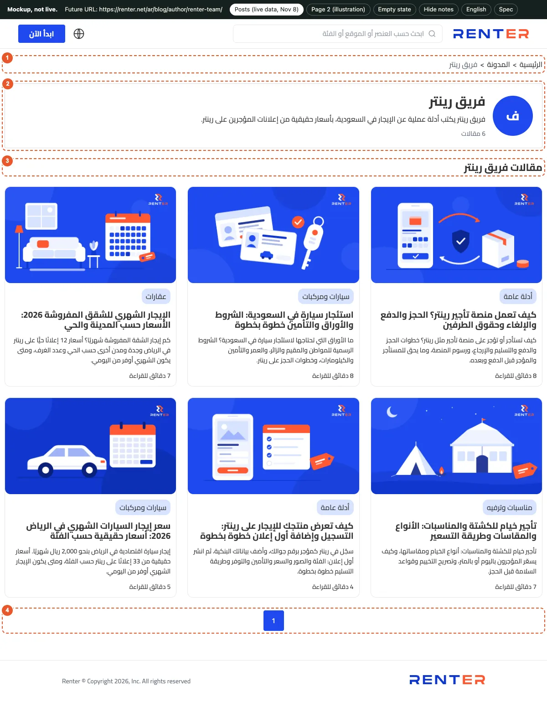
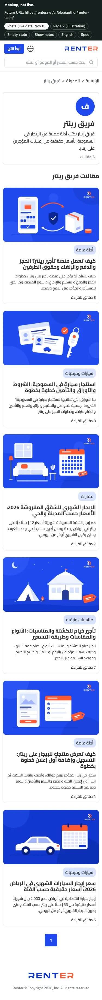
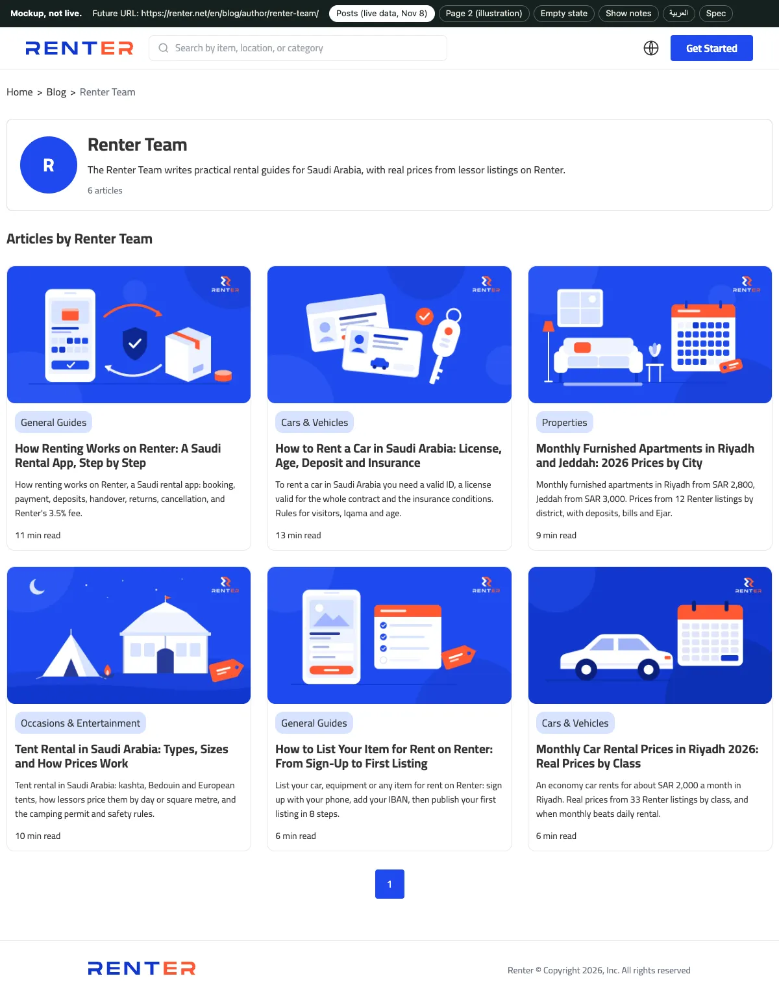
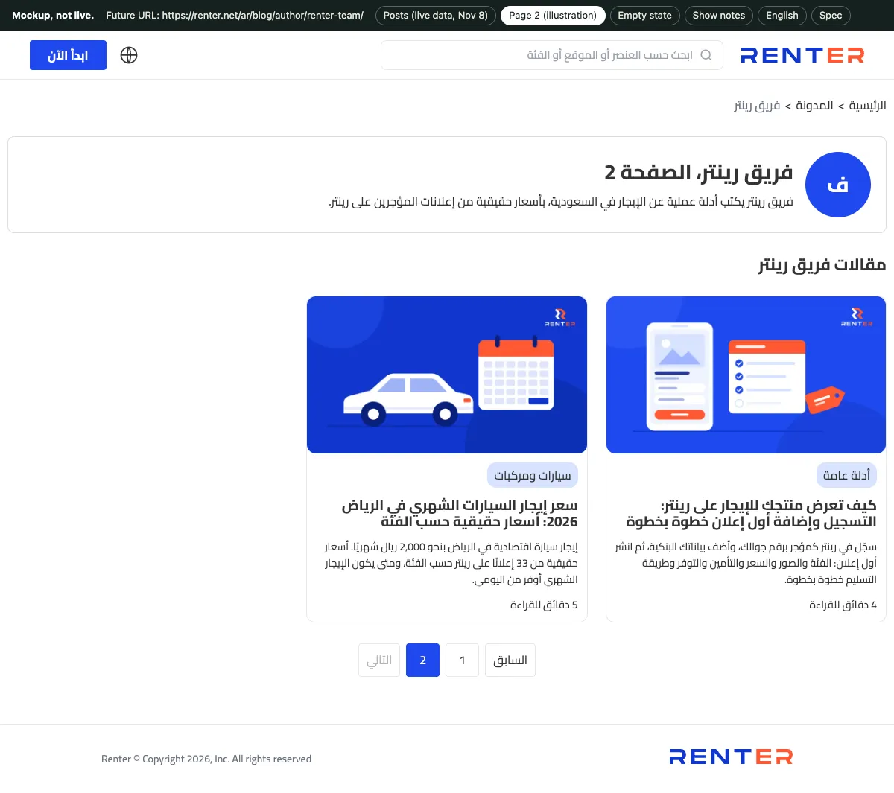
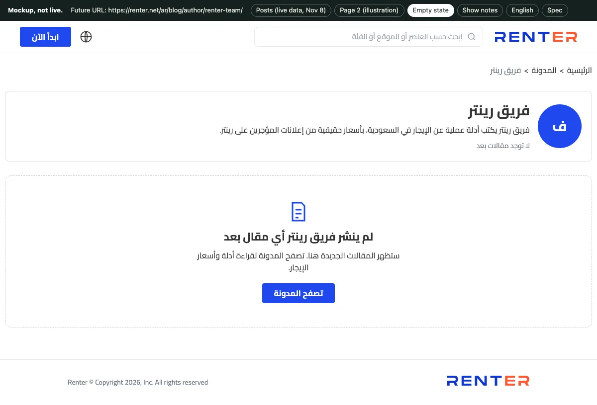
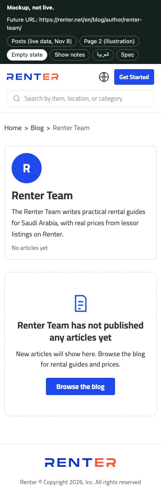

Renter × TMD · Sub-ticket of issue 11 · checked live Nov 8, 2026
/ar/blog/author/{slug}/ and /en/blog/author/{slug}/, server-rendered, with /page/N/ for page 2 and laterGET /api/v1/blog/authors/{slug}/?locale=ar|en (exists). Paging fields are missing, see API.The mockup reuses the live blog parts: the Cairo font, the #2049ee blue, the breadcrumb, the author box from the article page, and the hub card and grid with no change. The dark bar at the top of the mockup is not part of the page; it switches between the states.






The table below maps each numbered note in the mockup to its content and rule.
| # | Part | Content | Rule |
|---|---|---|---|
| 1 | Breadcrumb | الرئيسية > المدونة > فريق رينتر · Home > Blog > Renter Team | Same component as the hub. The last item is plain text with aria-current="page". Same 3 items on page 2. |
| 2 | Author header | Initial in a blue circle (the article author box, at 88 px), H1 = author name, then bio, then the post count (6 مقالات · 6 articles) | One H1. On page 2 and later the H1 adds the page: فريق رينتر، الصفحة 2 · Renter Team, page 2. The API sends the same text in role and bio: show it once. When photo is set, show the photo in place of the initial. |
| 3 | Post list | H2 مقالات فريق رينتر · Articles by Renter Team, then the hub card grid | The same card component as the hub: 16:9 cover, hub chip, title link, excerpt, reading time. 3 columns, 2 under 1,024 px, 1 under 640 px. 12 cards per page. Order: newest publish_at first, then the same tie order as the hub. English lists only posts with en_published. |
| 4 | Pager | Previous, page numbers, Next, as real <a href> links | Same style as the hub pager. Page 1 lives at the base URL; /page/1/ answers 301 to it. A page past the last answers 404. Today there are 6 posts, so only "1" shows and /page/2/ must answer 404. |
| 5 | Empty state | Icon, لم ينشر فريق رينتر أي مقال بعد · Renter Team has not published any articles yet, a short line, and a button to the blog home | Shown when the author exists but has 0 published posts in that language. See the head rules for this state below. |
The Arabic page 1 head is below. The values come from the blog plan, section 4 (author title formula with the "|" separator), and the same pattern as the live hub and article pages.
<title>مقالات فريق رينتر | مدونة رينتر</title>
<meta name="description" content="فريق رينتر يكتب أدلة عملية عن الإيجار في السعودية، بأسعار حقيقية من إعلانات المؤجرين على رينتر.">
<meta name="robots" content="index, follow, max-image-preview:large">
<link rel="canonical" href="https://renter.net/ar/blog/author/renter-team/">
<link rel="alternate" hreflang="ar" href="https://renter.net/ar/blog/author/renter-team/">
<link rel="alternate" hreflang="en" href="https://renter.net/en/blog/author/renter-team/">
<link rel="alternate" hreflang="x-default" href="https://renter.net/ar/blog/author/renter-team/">
<meta property="og:type" content="profile">
<meta property="og:title" content="مقالات فريق رينتر | مدونة رينتر">
<meta property="og:description" content="فريق رينتر يكتب أدلة عملية عن الإيجار في السعودية، بأسعار حقيقية من إعلانات المؤجرين على رينتر.">
<meta property="og:url" content="https://renter.net/ar/blog/author/renter-team/">
<meta property="og:site_name" content="رينتر">
<meta property="og:locale" content="ar_SA">
<meta property="og:locale:alternate" content="en_US">
<meta property="og:image" content="https://renter.net/renterlogo.png">
<meta property="og:image:width" content="1731">
<meta property="og:image:height" content="909">
<meta name="twitter:card" content="summary_large_image">
<meta name="twitter:title" content="مقالات فريق رينتر | مدونة رينتر">
<meta name="twitter:description" content="فريق رينتر يكتب أدلة عملية عن الإيجار في السعودية، بأسعار حقيقية من إعلانات المؤجرين على رينتر.">
<meta name="twitter:image" content="https://renter.net/renterlogo.png">The English page uses the same tags with these values.
title, og:title, twitter:title: Articles by Renter Team | Renter Blogdescription: The Renter Team writes practical rental guides for Saudi Arabia, with real prices from lessor listings on Renter.canonical and og:url: https://renter.net/en/blog/author/renter-team/og:site_name Renter, og:locale en_US, og:locale:alternate ar_SA. The 3 hreflang lines are the same as in Arabic.These rules cover page 2, the empty state and errors.
/page/2/), never page 1. hreflang points to page 2 in the other language only if that page exists.noindex, follow, no hreflang line that points to it from the other language, and no sitemap entry.Link header must carry the same hreflang set as the HTML head. On posts today it announces English pages that do not exist (issue 11, open).Put one @graph with a ProfilePage and a BreadcrumbList on the page. Renter Team is a team, so mainEntity is an Organization. If a named writer is added later, use Person for that author.
{
"@context": "https://schema.org",
"@graph": [
{
"@type": "ProfilePage",
"@id": "https://renter.net/ar/blog/author/renter-team/",
"url": "https://renter.net/ar/blog/author/renter-team/",
"name": "مقالات فريق رينتر",
"description": "فريق رينتر يكتب أدلة عملية عن الإيجار في السعودية، بأسعار حقيقية من إعلانات المؤجرين على رينتر.",
"inLanguage": "ar",
"isPartOf": { "@type": "WebSite", "name": "Renter", "url": "https://renter.net/ar/" },
"breadcrumb": { "@id": "https://renter.net/ar/blog/author/renter-team/#breadcrumb" },
"mainEntity": {
"@type": "Organization",
"@id": "https://renter.net/ar/blog/author/renter-team/#author",
"name": "فريق رينتر",
"alternateName": "Renter Team",
"description": "فريق رينتر يكتب أدلة عملية عن الإيجار في السعودية، بأسعار حقيقية من إعلانات المؤجرين على رينتر.",
"url": "https://renter.net/ar/blog/author/renter-team/",
"parentOrganization": { "@type": "Organization", "name": "رينتر", "url": "https://renter.net/" }
}
},
{
"@type": "BreadcrumbList",
"@id": "https://renter.net/ar/blog/author/renter-team/#breadcrumb",
"itemListElement": [
{ "@type": "ListItem", "position": 1, "name": "الرئيسية", "item": "https://renter.net/ar/" },
{ "@type": "ListItem", "position": 2, "name": "المدونة", "item": "https://renter.net/ar/blog/" },
{ "@type": "ListItem", "position": 3, "name": "فريق رينتر", "item": "https://renter.net/ar/blog/author/renter-team/" }
]
}
]
}The English page uses the same graph with /en/ URLs, "inLanguage": "en", name "Articles by Renter Team", author name "Renter Team" with alternateName فريق رينتر, the English bio, and the crumbs Home, Blog, Renter Team. When the API adds the author updated_at, add it as dateModified on the ProfilePage.
Once the page answers 200, change the author in the BlogPosting on every post to point at it. The block below shows the Arabic version; English uses the /en/ URL and "Renter Team".
"author": {
"@type": "Organization",
"@id": "https://renter.net/ar/blog/author/renter-team/#author",
"name": "فريق رينتر",
"url": "https://renter.net/ar/blog/author/renter-team/"
}Add one entry per author to each blog sitemap (Arabic, English), as the blog plan already asks. lastmod is the newest updated_at of that author's published posts in that language. List only authors with 1 or more posts in that language, and do not list /page/N/.
<url>
<loc>https://renter.net/ar/blog/author/renter-team/</loc>
<lastmod>2026-11-04T23:03:30.000Z</lastmod>
</url>The author endpoint works today, with these gaps for paging.
page. Add page and per_page=12, and a meta object with total, per_page, current_page and last_page, the same as /api/v1/blog/posts.publish_at, the author list and the hub list use a different order (the 4 posts of Nov 2). Use the same tie order in both.updated_at for dateModified.Each check below must pass on renter.net, in Arabic and English.
mainEntity and a BreadcrumbList, and the Rich Results Test shows 0 errors./page/2/ answers 404 while the author has 12 posts or fewer, and /page/1/ answers 301 to the base URL.noindex, follow and is not in that sitemap. An unknown slug answers 404.lastmod.author has the @id and url of the author page, and the name in the author box under the post links to it.Run these commands after the deploy.
curl -s -o /dev/null -w '%{http_code}\n' https://renter.net/ar/blog/author/renter-team/
curl -s https://renter.net/ar/blog/author/renter-team/ | grep -o '<h1[^<]*<[^>]*>[^<]*\|"@type":"ProfilePage"\|rel="canonical"[^>]*'
curl -s -o /dev/null -w '%{http_code}\n' https://renter.net/ar/blog/author/renter-team/page/2/
curl -s https://renter.net/sitemap/ar/blog.xml | grep author